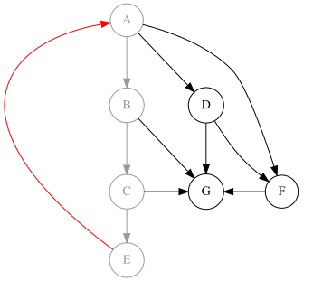
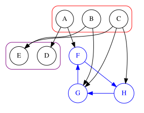

Detecting Cycles in Directed Graphs¶
To detect cycles in a directed graph, we can use Depth-First Search (DFS) with a modification to track vertices in the current recursion stack.
def has_cycle(graph):
"""Function to check for cycles using DFS"""
visited = [False] * len(graph) # Array to track visited vertices
rec_stack = [False] * len(graph) # Array to track vertices in recursion stack
def dfs(v):
visited[v] = True # Mark current vertex as visited
rec_stack[v] = True # Add vertex to recursion stack
# Process all neighbors
for neighbor in graph[v]:
if not visited[neighbor]:
if dfs(neighbor): # Recursively check neighbors
return True
elif rec_stack[neighbor]: # If neighbor is in current stack
return True
rec_stack[v] = False # Remove vertex from stack after processing
return False
# Check all components
for node in range(len(graph)):
if not visited[node]:
if dfs(node):
return True
return False

Explanation:
- The rec_stack array keeps track of vertices in the current DFS path
- If we encounter a vertex that is already in the recursion stack, a cycle exists
- Time complexity: O(V+E), same as standard DFS
- This algorithm can also be used for topological sorting of Directed Acyclic Graphs (DAGs)
Introduction¶
In previous sections, it was sometimes necessary to determine whether a directed graph contains a cycle! For example, to provide a topological order for a graph, we first need to ensure the graph is acyclic. Because a graph containing cycles has no valid topological order!
Here we describe two algorithms that can detect cyclicity in graphs. Notably, the first algorithm will output an actual cycle in the graph if one exists!
Code blocks and images remain unchanged as per instructions:
// Check if graph is cyclic
bool hasCycle(int v) {
visited[v] = true;
for(int u: adj[v]) {
if(!visited[u]) {
if(hasCycle(u))
return true;
} else if(!finished[u]) { // inja yal ra hazf mikonim
return true;
}
}
finished[v] = true;
return false;
}

Shakl-e nemone-ye yek graph ba cycle.¶
Proof of Correctness: While traversing the graph, if we are at a vertex \(v\) and reach a vertex \(u\) that has been visited but not exited (vertices on the gray path), this implies there is a directed edge from \(v\) to \(u\) (a red edge) and \(u\) has a directed path to \(v\). In this case, the graph contains a cycle. Furthermore, if the graph has a cycle, this algorithm will always detect it. Suppose, for contradiction, that \(G\) is a graph with at least one cycle that the algorithm fails to detect. Let \(v\) be the first vertex on cycle \(C\) that we enter during traversal, and let \(e\) be the edge from \(u\) to \(v\) in cycle \(C\). During traversal, before exiting \(v\), we will reach \(u\) (since these two vertices are part of a cycle and there must be a path from \(v\) to \(u\)). Using edge \(e\), we return to \(v\), thereby detecting the cycle. This contradiction implies the algorithm will always find a cycle in any graph that contains one.
{kind=link}

Algorithm Complexity¶
In the algorithm, we used \(DFS\) once, hence its complexity is \(O(m+n)\), where \(n\) is the number of vertices and \(m\) is the number of edges.
Algorithm Implementation¶
Note that in the following implementation, if a cycle exists, it will be detected and output. If no cycle is found, the topological order of vertices will be output.
const int MX = 5e5 + 200;
int n, m;
vector<int> gr[MX], topo, cycle;
bool st[MX], ed[MX];
bool dfs(int v){
st[v] = 1;
for(int u: gr[v]){
if(st[u] && !ed[u]){
cycle.push_back(u);
cycle.push_back(v);
return 0;
}
if(!st[u] && !dfs(u)){
if(cycle[0] != cycle[cycle.size() - 1])
cycle.push_back(v);
return 0;
}
}
ed[v] = 1;
topo.push_back(v);
return 1;
}
int main(){
cin >> n >> m;
for(int i = 0; i < m; i++){
int v, u;
cin >> v >> u;
gr[v].push_back(u);
}
bool check = 1;
for(int i = 0; i < n; i++){
if(!st[i] && !dfs(i)){
check = 0;
break;
}
}
if(check){
cout << "no cycle \ntopo order: ";
for(int v: topo)
cout << v << ' ';
}
else{
cout << "cycle: ";
for(int i = cycle.size() - 2; i >= 0; i--)
cout << cycle[i] << ' ';
}
return 0;
}
Kahn's Algorithm (Kahn)¶
Explanation: Another method to determine whether a graph contains a cycle is Kahn's algorithm. This algorithm operates based on induction. This method is very similar to Theorem 3.3.2!
The algorithm works as follows: Initially, we have an empty set of vertices called \(zero\). This set contains vertices in the current graph whose in-degree is 0.
At the start, vertices with an in-degree of 0 are added to \(zero\).
In each step, we remove the vertices in \(zero\) along with their edges from the graph. As a result, some new vertices may attain an in-degree of 0 and are added to \(zero\). We repeat this process until either the number of vertices in the graph becomes 0 or the \(zero\) set becomes empty.
If at any stage the size of the \(zero\) set is 0 while the current graph still contains vertices, then the graph definitely has a cycle. If this does not happen and all vertices are removed from the graph, then the graph has no cycle.
{kind=link}

For better understanding, see the figure on the side. In this figure, the blue cycle is never added to the \(zero\) set, thus the cyclic graph is detected!
Algorithm Complexity¶
To analyze the algorithm's complexity, we need to determine how much we traverse vertices and edges. We traverse edges when a vertex is in the \(zero\) set, at which point we traverse its adjacent edges. On the other hand, each vertex enters the \(zero\) set only once and is subsequently removed from the graph. Therefore, we traverse each edge exactly once.
Similarly, we traverse vertices when they are added to the \(zero\) set. Analogously, each vertex is added to this set only once and is then removed from the graph.
Thus, the complexity of the algorithm is \(O(n + m)\), which matches the complexity of the previous algorithm!
Algorithm Implementation¶
The following code implements checking the connectivity of a graph using DFS:
def is_connected(graph):
"""Function to check graph connectivity"""
if not graph:
return True
visited = set() # Visited nodes
start_node = next(iter(graph)) # Get any node
stack = [start_node]
while stack:
node = stack.pop()
if node not in visited:
visited.add(node)
# Add unvisited neighbors to stack
stack.extend([n for n in graph[node] if n not in visited])
return len(visited) == len(graph.keys())

This function uses Depth-First Search (DFS) to check the connectivity of the graph. The algorithm works as follows:
Select an arbitrary starting node
Traverse all reachable nodes using DFS
Compare the number of visited nodes with the total number of nodes
If all nodes are visited, the graph is connected
توجه
The input graph must be in adjacency list format. For example:
Use a dictionary where keys are nodes
Values are lists of adjacent nodes
If all nodes are visited after DFS traversal, the graph is connected
Example usage:
graph = {
'A': ['B', 'C'],
'B': ['A', 'D'],
'C': ['A'],
'D': ['B']
}
print(is_connected(graph)) # Output: True
The output of the above example will be:
True
const int maxn = 5e5 + 5;
int n, m; // tedad ras ha va yal ha
int in_edge[maxn]; // in_edge[v] daraje vorodi rase v hast!
vector <int> g[maxn]; // vector e mojaverat
vector <int> zero; // ras haie ke daraje vorodi 0 daran va baiad hazf shan!
bool has_cycle(){
for(int i = 0; i < n; i++){
if(in_edge[i] == 0){
zero.push_back(i);
}
}
for(int i = 0; i < n; i++) {
if(zero.size() == 0){
return true;
}
int v = zero[zero.size() - 1]; // ozve akhar az remove_set
zero.pop_back();
for(int u : g[v]){
in_edge[u]--;
if(in_edge[u] == 0){
zero.push_back(u);
}
}
}
return false;
}
int main(){
cin >> n >> m;
for(int i = 0; i < m; i++){
int u, v;
cin >> u >> v; // u, v 0-based hastan
g[u].push_back(v);
in_edge[v]++; // yale (u, v) dar graph ast. pas daraje vorodi v yeki ziad mishe!
}
if(has_cycle())
cout << "graph has at least one cycle!" << endl;
else
cout << "graph is acyclic!" << endl;
return 0;
}
This book is made by The Shaazzz contributors.
It is publicly available with cc-by-sa license.
Last updated at اوت 27, 2025.
Rendered by Sphinx (4.3.2) and Minoo theme (Beta 0.9.7).